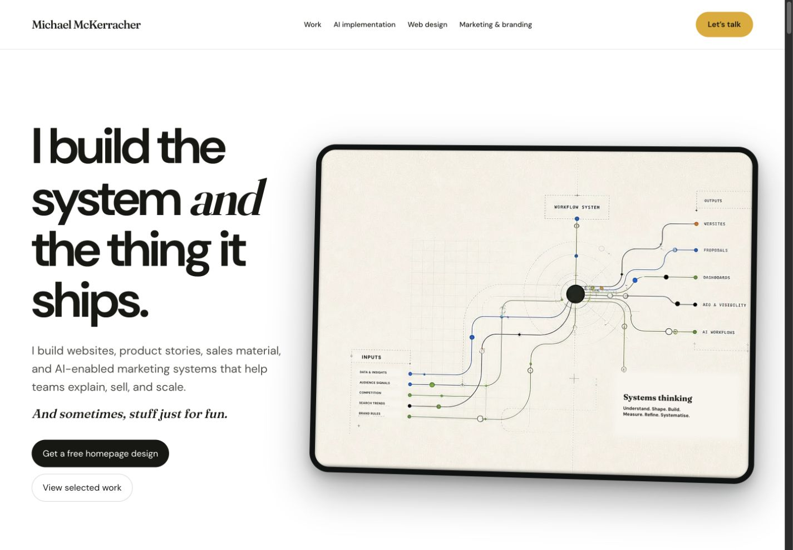
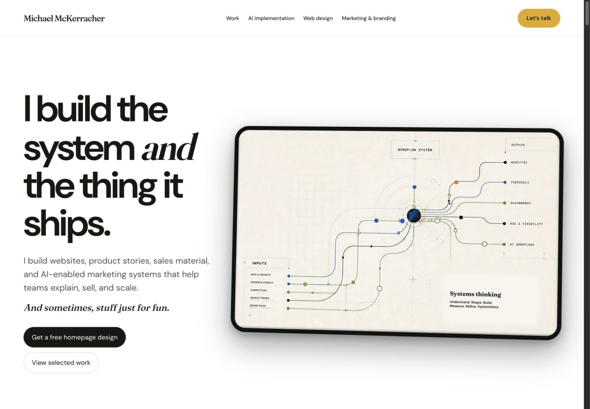
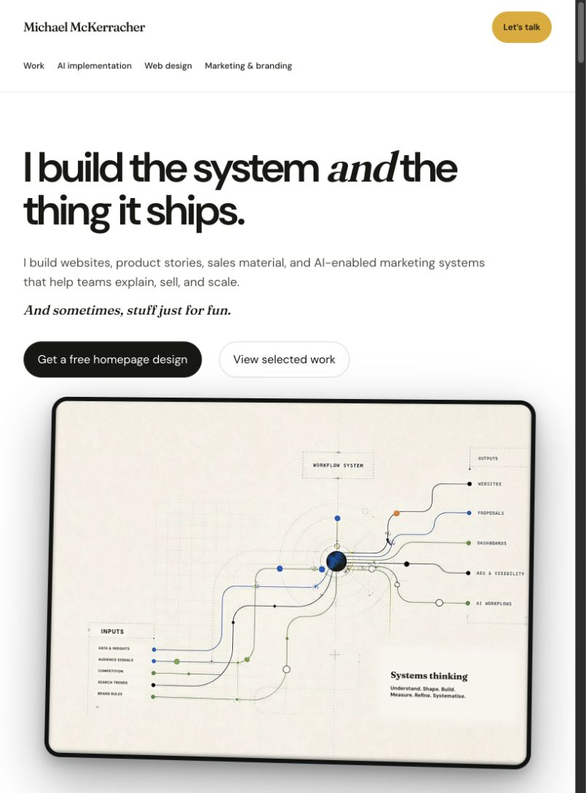
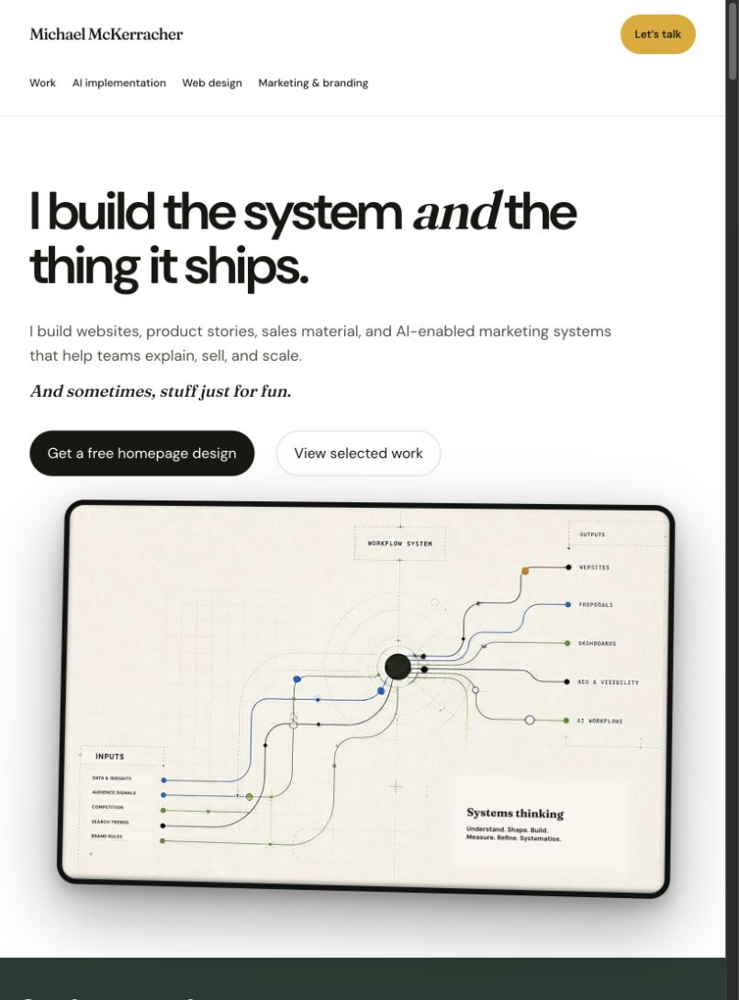
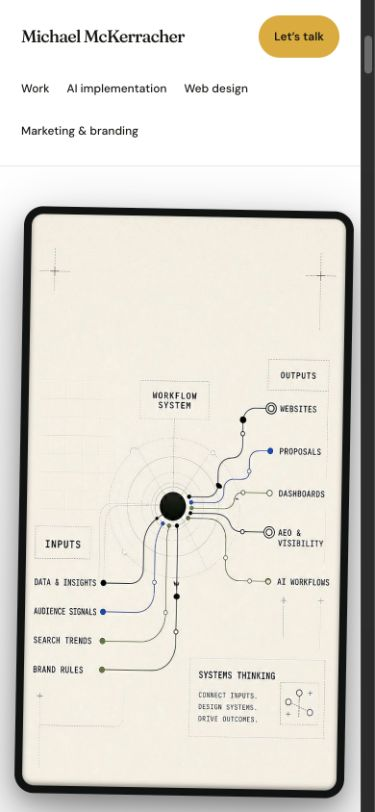
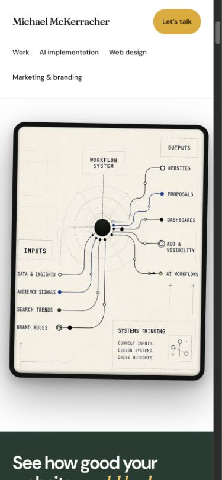

A tighter frame.
The same artwork.
Local review only. The live hero and original films are unchanged. Sticky navigation is implemented locally. The proposed framing removes unused side canvas and brings the top edge just above Outputs; the portrait device is shorter.
Desktop




Tablet




Mobile



